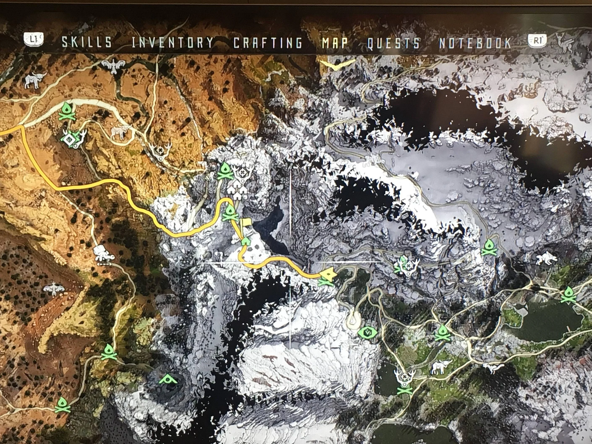

Le Path-finding ou "recherche de chemin" consiste à trouver le chemin le plus court entre un point A et un point B.
Il va permettre par exemple à un PNJ de ce déplacer et d'interagir dans un environnement logiquement (pouvoir éviter des obstacles).
On retrouve le même système avec les cartes. L'algorithme A* va par exemple modéliser le terrain dans un graphe, puis va chercher le chemin le plus
court entre deux noeuds en prennant en compte des éventuels obstacles


Le Machine learning donne aux ordinateurs la capacité d’apprendre des tâches pour lesquelles ils ne sont pas spécifiquement programmés.
L'ordinateur va "apprendre à apprendre" dans un système d'essaies et d'échecs. L'algorithme va collecter des données qui déterminent quel modèle doit être construit.
Dès que des données lui sont fournies, il les analyse et s’ajuste pour coller au mieux à la situation.
Le deep learning est un type de machine learning. Il permet d'automatiser l'analyse prédictive, ces algorithmes
sont empilés dans une hiérarchie de complexité et d’abstraction croissantes.
En 2020, Nvidia sort la DLSS ou le super-échantillonnage via Deep Learning. Le GPU va calculer les images dans une résolution inférieure
et l'IA se charge de redimensionner l’image et d’ajouter les informations manquantes.
Ce qui permet de bénéficier d’une fréquence d’images plus élevée et/ou d’améliorer la qualité graphique, tout ça avec une carte graphique
de milieu de gamme.